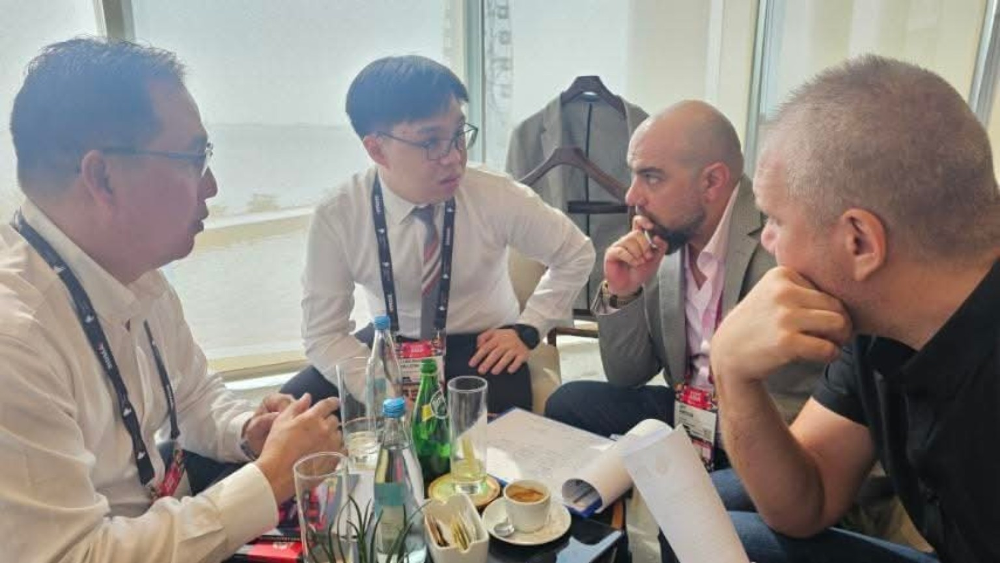
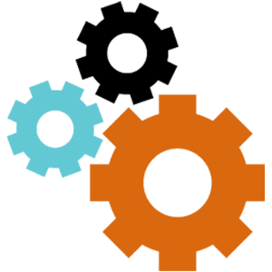

Procure. Deploy. Connect.
Hardware planning, procurement and deployment, with network and server support.
Management & consultancy. Built around your business.
We help businesses take the next step - bringing together the planning, people and technical work that turn a business idea into an operation.
Fintech. Gaming. Regulation. I.T. services. Construction.


What we do
Some projects need a clearer plan. Others need the right platform, equipment or people to carry it through. We help connect those needs instead of treating them as separate problems.
A clearer plan for the business you want to build.
02Bring the commercial, technical and operational pieces together.
03Work through requirements with the right preparation.
04The websites, software and infrastructure behind your operation.
05Practical experience in the spaces and systems businesses depend on.
Who we are
Providelabs Corporation began in construction in 2019 and grew into management and financial consultancy, platforms and I.T. services.
Today, we help clients work through business decisions and the practical tasks behind them. We start with the requirement, agree on a clear scope and bring the relevant expertise into the work.
Providelabs Management Consultancy was created to better serve the growing needs of our clientele, with focused support for business planning, regulatory coordination and operations.
I.T. that supports the operation
Websites are one part of our I.T. offering. We also support the software, hardware and infrastructure your people use every day.
Explore I.T. servicesHardware planning, procurement and deployment, with network and server support.
White-label platforms and custom applications shaped around your operating workflows.
Website design and development that make your business easier to understand and contact.
Website designSelected technical experience
Business websites, digital passes, attendance tools and HR leave management systems: our technical experience supports both customer-facing services and everyday operations.
We bring together development, deployment, systems administration and security-focused support to help businesses put these tools to work.
Explore our experienceDevelopment, server setup, maintenance and updates.
Attendance, leave, guest passes and registration workflows.
Beyond the business
Our company story also includes community gatherings, rice distribution and relief visits in Taytay.
These moments sit alongside our commercial work, not apart from it. They reflect the people and relationships behind Providelabs.
See our community activitiesLet us work through it together
A clear brief starts with a conversation. Tell us about your business, the challenge and the support you need.